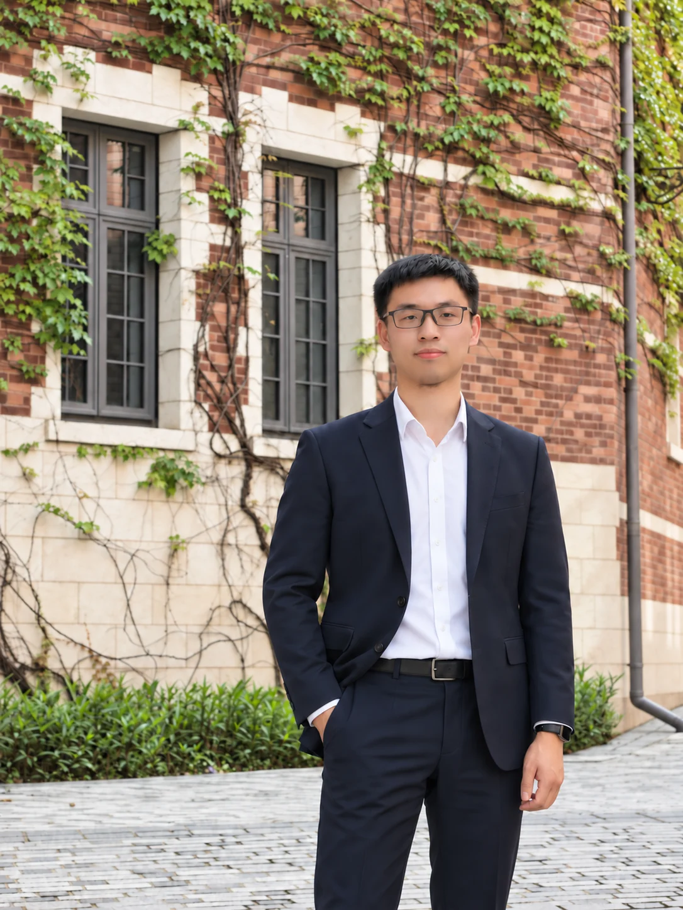

长期学习
承认边界，持续补课。技术变化越快，越需要稳定的学习能力。

关于我
中国科学院大学计算机硕士，培养于中国科学院深圳先进技术研究院；前华为 AI 算法工程师，拥有四年大厂经验与七年 AI 研究、工程及产品实践。现居深圳，正在把技术、写作与人文兴趣汇集成新的作品。
科研让我学会把陌生问题做深，华为让我经历从算法到产品、从局部指标到规模交付的完整链路。走过这些阶段以后，我想把命题权更多地交回自己：选择真正关心的问题，也承担选择之后的结果。
独立探索给了我一段更真实的时间，去旅行、完成一本书、重建生活节奏，也重新确认自己愿意长期投入的事情：学习、创造，以及对人有帮助的技术。
承认边界，持续补课。技术变化越快，越需要稳定的学习能力。
把理解变成可以被看见、使用和讨论的成果，让行动留下证据。
关心效率，也关心人的感受、差异与选择，尽量让技术有温度。
不把生活完全交给惯性。选择方向以后，愿意持续投入并接受检验。
联系
个人邮箱：wang150172@163.com